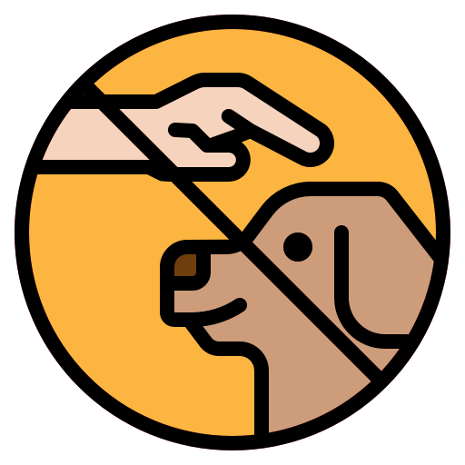
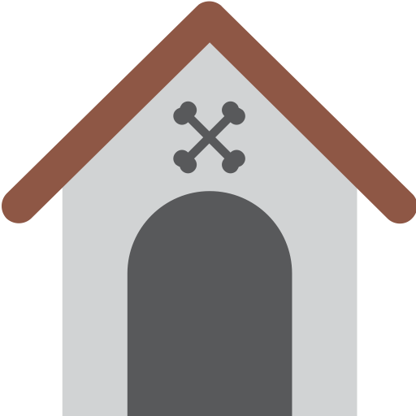

Segítsünk együtt az állatokon
Az adományod segít, hogy folytathassuk az elkezdett munkát és az állatvédelmi reformokat
Adomány küldése
Tevékenységeink

Állatvédelmi reformok
Diósjenő a Börzsöny hegység lábánál festői környezetben elterülő, csaknem 3000 főnyi lakosú település önkormányzati hivatal épülete előtt csokornyakkendős, középtermetű, barna színű, farok csóváló kutyus üdvözli az épületbe belépni kívánó ügyfeleket. A polgármester, hivatali dolgozók, képviselő testület és a helyi állatvédő egyesület tagjai gondoskodnak arról, hogy a nem oly régen életét kóbor kutyaként tengető ügyfélfogadó kutya chippelve, oltva és szocializálva várja leendő gazdáját. Az épület mögött a fiatal köztisztviselő hölgy átadja az ideiglenes befogadóknak a helyi tűzoltók által mentett, falak közé szorult két gondozásra szoruló árva pici cicát...
Sintérbiznisz felszámolása
Most hétvégén ismét találkozhattok velünk! Gyertek el kutyusaitokkal egy jó hangulatú kutyás találkozóra! Fürödni ott nekik is szabad. A MÁOSZ célja az állatvédelmi szervezetek érdekképviselete, az állatvédelmi reformok bevezetése, a sintér biznisz felszámolása és a kóbor kutyák ivartalanítása...
Kóbor kutya probléma megoldása
Egy hiánypótló, friss tanulmány szerint hazánkban 80-100 ezer kóbor kutya is élhet. A probléma túlmutat az állatvédelmen, az egészségügyi kockázatok mellett a falkába verődött állatok emberekre és haszonállatokra is támadnak. A megoldás állami segítség nélkül lehetetlen. Kóbor kutyák márpedig vannak, sőt nagyon sokan vannak Magyarországon. Amellett, hogy az ember szíve megszakad sorsuktól, veszélyt is jelentenek: embereket, házi állatokat támadnak meg, betegségeket terjeszthetnek. A mai magyar valóság sokkal szörnyűbb, mint ahogy a legtöbben gondolnánk...
Csapatunk
Szatmáry Viktória
elnök
Bányai Zádor
elnökhelyettes
Makkai Adél
munkatárs
Gyenes Menyhért
munkatárs


© 2020 Magyar Állatvédők Országos Szervezete. Minden jog fenntartva.